1056F DIRECT PETROL INJECTION SYSTEM
- Path
- Descriptions > 10 ENGINE UNIT > 1056 PETROL INJECTION SYSTEM > 1056F DIRECT PETROL INJECTION SYSTEM
- Kind
- system description
- Applies to
- engines: 2.0 JTS; all production periods
- Interactive page
- https://sloeber94.github.io/elrnDB-aGt/en/#/2921326
Applies to: engines: 2.0 JTS; all production periods
CONSTRUCTION FEATURES
General view
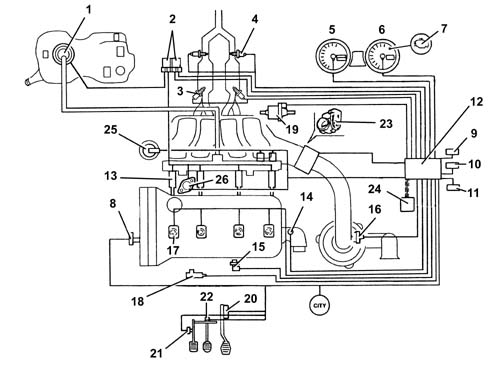
1 - Electric fuel pump 2 - Relays 3 - Lambda sensors upstream of catalytic preconverters 4 - Lambda sensors downstream of catalytic preconverters 5 - Speedometer 6 - Rev counter 7 - Engine Check warning light 8 - Timing sensor 9 - Climate control connector 10 - Diagnostic connector 11 - Alfa Romeo CODE connector 12 - Injection/ignition control unit 13 - Injectors 14 - Coolant temperature sensor 15 - Rpm sensor 16 - Air flow meter with air temperature sensor 17 - Ignition coils 18 - Knock sensor 19 - Fuel vapour recirculation solenoid valve 20 - Accelerator pedal with built-in potentiometer. 21 - Clutch pedal switch 22 - Brake pedal switch 23 - Throttle body integral with D.V.L. 24 - CAN line 25 - Modular intake manifold solenoid valve 26 - Variable valve timing
Injection-ignition control unit MED7.1.1
The control unit is fitted in the engine compartment, on the intake chamber.
The control unit memory is the 'flash EPROM' type, i.e. reprogrammable from the outside without intervening on the hardware.
The adoption of the Alfa Romeo CODE does not allow control units to be exchanged between vehicles.
Replacement of the injection control unit, air capacity case or the throttle body integral with the D.V.E. means that the self-learning procedure has to be carried out.
PIN-OUT
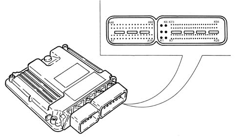
K1 - Electronic earth K2 - Electronic earth K3 - Ignition-operated power supply, via main relay K4 - Electronic earth K5 - Ignition-operated power supply, via main relay K6 - Ignition-operated power supply, via main relay K7 - Compressor relay control K8 - Fuel level signal K9 - Not connected K10 - Air temperature sensor signal K11 - Not connected K12 - Not connected K13 - Not connected K14 - Not connected K15 - Air flow meter K16 - Air flow meter reference earth K17 - 5 Volt output K18 - Vehicle speed signal K19 - Not connected K20 - Brake light switch K21 - Cruise Control Resume K22 - Not connected K23 - Clutch pedal switch K24 - Quadrinary - fan 2nd speed request K25 - Main relay activation K26 - Engine temperature for climate control system K27 - Not connected K28 - Fuel pump relay K29 - Lambda sensor heating (front cat. 2) K30 - Not connected K31 - Not connected K32 - Not connected K33 - Not connected K34 - Not connected K35 - Not connected K36 - Not connected K37 - Not connected K38 - Not connected K39 - Not connected K40 - Compressor activation request K41 - Cruise Control ON/OFF K42 - Not connected K43 - Cruise Control SET - K44, Cruise Control SET + K45 - Quadrinary - Fan 1st speed request K46 - Not connected K47 - Not connected K48 - Not connected K49 - Lambda sensor heater (rear cat. 1) K50 - Not connected K51 - Not connected K52 - LA1 lambda sensor (front cat. 1) K53 - Lambda sensor signal (front cat. 1) K54 - Not connected K55 - Lambda sensor (rear cat. 2) K56 - Lambda sensor reference earth (rear cat. 2) K57 - Lambda sensor earth (front cat. 2) K58 - Lambda sensor (front cat. 2) K59 - Earth for potentiometer - 1 accelerator pedal K60 - Signal for potentiometer - 1 accelerator pedal K61 - 5 Volt output for accelerator pedal K62 - Not connected K63 - CAN 2 - H line K64 - CAN 1 - H line K65 - Brake lights K66 - Rev counter signal K67 - Ignition-operated signal to control unit (pin 15) K68 - Fuel consumption signal K69 - 2nd speed fan control K70 - Direct power supply K71 - Output for engine coolant temperature warning light K72 - Alfa Romeo CODE connection K73 - Lambda sensor heater (front cat. 1) K74 - Lambda sensor (ant. cat. 1) K75 - Lambda sensor earth (front cat. 1) K76 - Lambda sensor reference earth (front cat. 1) K77 - Lambda sensors (front cat. 1) K78 - Not connected K79 - Lambda sensor signal (front cat. 2) K80 - LA1 lambda sensor (front cat. 2) K81 - Earth for potentiometer - 2 accelerator pedal K82 - Signal for potentiometer - 2 accelerator pedal K83 - 5Volt output for accelerator pedal module K84 - Not connected K85 - CAN 2 - L line K86 - CAN 1 - L line K87 - Diagnostic connection (K line) K88 - Not connected K89 - Injection warning light K90 - Not connected K91 - Cruise Control warning light K92 - Not connected K93 - Fan 1st speed control K94 - Lambda sensor heater (front cat. 2) A1 - Injector 1 A2 - Injector 3 A3 - Not connected A4 - Not connected A5 - Fuel pressure regulator A6 - Variable geometry activation A7 - Not connected A8 - Not connected A9 - Engine coolant temperature A10 - Not connected A11 - Not connected A12 - Not connected A13 - Potentiometer - 1 throttle body A14 - 5 volt output for throttle body A15 - Throttle opening motor A16 - Injector 4 A17 - Not connected A18 - Injector 2 A19 - Not connected A20 - Not connected A21 - Reference earth (cam angle sensor, fuel pressure sensor, brake servo sensor) A22 - Not connected A23 - Not connected A24 - Fuel pressure sensor A25 - Not connected A26 - 5 Volt output for fuel pressure sensor, cam angle sensor and brake servo sensor A27 - Not connected A28 - Throttle body potentiometer 2 A29 - Throttle body reference earth A30 - Throttle opening motor A31 - Injector 3 A32 - Not connected A33 - Injector 1 A34 - Not connected A35 - Not connected A36 - Variable valve timing control A37 - Cylinder 2 coil control A38 - Cylinder 4 coil control A39 - Cylinder 3 coil control A40 - RPM sensor, connector A A41 - Timing sensor A42 - Brake servo sensor pressure signal A43 - Not connected A44 - Knock sensor A45 - Not connected A46 - Injector 2 A47 - Not connected A48 - Injector 4 A49 - Not connected A50 - Not connected A51 - Oil pressure switch A52 - Not connected A53 - Not connected A54 - Cylinder 1 coil control A55 - Engine rpm sensor, connector B A56 - Not connected A57 - Sensor reference earth A58 - Not connected A59 - Knock sensor A60 - Fuel vapour solenoid control
INJECTORS
These are fitted on the cylinder head and operated by the injection control unit.
They are fastened by means of a fork secured to the head with a nut.
The injector has a single opening with the fuel sprayed at an angle of 60°.
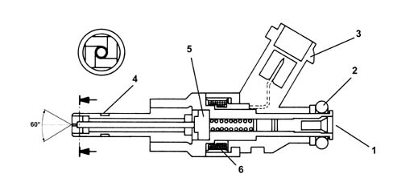
1 - Fuel intake 2 - O-ring 3 - Electrical connection 4 - Teflon ring 5 - Armature 6 - Coil
PRESSURE PUMP
This is radial jet type with three radial pistons and is driven by the exhaust camshaft via a spacer.
With the engine started, the fuel pressure in the rail is around 50 bar during idling.
During operation, the pressure in the rail can reach a maximum of 100 bar depending on the engine load conditions.
The maximum pressure produced by the pressure pump is around 120 bar (if the pressure regulator is stuck).
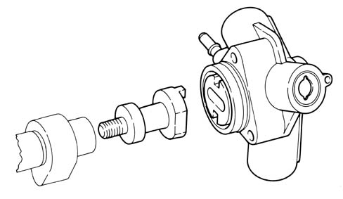
The pressure pump must be supplied with a pressure of at least 4.5 bar; so the fuel system has an auxiliary pump immersed in the fuel tank.
The pressure pump is lubricated and cooled by the same fuel by means of suitable ducts.
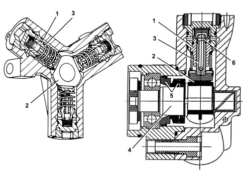
1 - Cylinder 2 - Cam 3 - Piston 4 - Pump shaft 5 - Dynamic seal 6 - Check valve
ENIGINE COOLANT TEMPERATURE SENSOR
This is fitted on the thermostat cup. The sensitive elements (2 NTC type), contained in a single body, translate temperature changes into resistance changes to measure coolant temperature.
The sensor is produced using semiconductor technology, so if the temperature of the sensor increases as the temperature of the coolant increases, the resistance decreases.
As the variation in resistance is not linear, for the same temperature increment, it is higher for low temperatures than for high temperatures.
The following functions are affected by the sensor:
- coolant temperature information to the engine control unit
- information for the instrument panel required for readings displayed to the driver.
The NTC earth connection is insulated from the sensor case; the sensor therefore comes with a four-way electrical connection.
The engine coolant temperature sensor also informs the climate control unit.
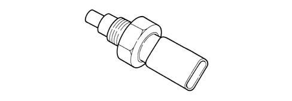
DETONATION SENSOR
The piezoelectric knock sensor is fitted on the cylinder block/crankcase and detects the intensity of the vibrations caused by the detonation in the combustion chambers.
The piezoelectric crystal forming the sensor detects the vibrations generated at a frequency of between 12 and 16 kHz, and transforms them into electrical signals sent to the fuel injection control unit.
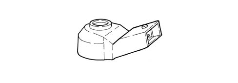
RPM SENSOR
It is fitted on the engine block, where it faces the phonic wheel located on the crankshaft.
The electrical connector of this sensor is built into the sensor case.
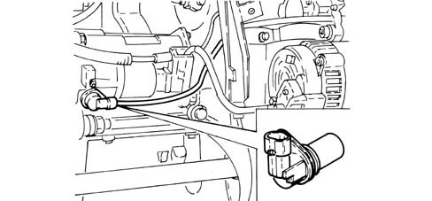
Operation
The sensor consists of a tubular casing (1) which contains a permanent magnet (3) and an electrical winding (2).
As the flywheel teeth go past, the magnetic flow produced by the magnet (3) undergoes fluctuations due to the change in the gap.
These fluctuations induce an electromotive force in the winding (2), at the ends of which there is a voltage which alternates between positive (tooth opposite sensor) and negative (gap opposite sensor).
The peak value of the output voltage from the sensor, provided other factors remain the same, depends on the distance between the sensor and tooth (gap).
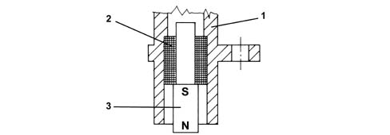
TIMING SENSOR
Hall effect; it is mounted on the cylinder head and 'facing' the exhaust camshaft pulley.
The engine control unit uses the timing sensor signal for recognizing T.D.C. at the end of compression for a quick start.
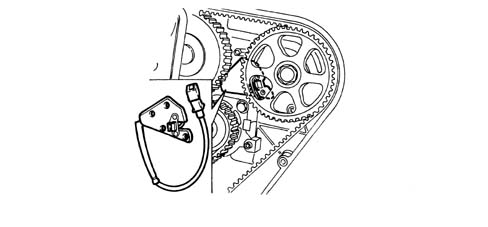
ACCELERATOR PEDAL WITH BUILT-IN POTENTIOMETER
The sensor consists of a casing, secured to the accelerator pedal mount, which contains a shaft, in an axial position, connected to two potentiometers: one main one and one safety one.
The engine control unit implements the following recovery strategies:
- if there is a fault with one of the two potentiometers, a throttle opening of up to 25% is allowed for a long period
- if both of the potentiometers fail completely, or one potentiometer and the brake pedal switch fail, the throttle opening is excluded.
There is a coil spring on the shaft which guarantees the correct resistance to the pressure whilst a second spring ensures the return on release.
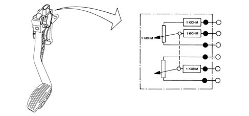
Operation
The position of the accelerator pedal is transformed into an electrical voltage signal and is sent to the fuel injection control unit by the potentiometer connected to the accelerator pedal.
The accelerator pedal position signal is processed together with the information relating to the rpm, to obtain the fuel injection times and relevant pressure.
THROTTLE BODY WITH DVL
It is fitted on the inlet chamber and regulates the quantity of air drawn in by the engine.
According to the signal coming from the accelerator pedal potentiometer, the injection control unit controls the opening of the throttle by means of a direct current motor integrated in the throttle body integrated with D.V.L.
The throttle opening takes place between 0° and 80° therefore including the idle adjustment.
The throttle body integral with D.V.L. is equipped with two potentiometers integrated so that one controls the other and viceversa.
If both the potentiometers fail or there is no supply, depending on the position of the accelerator pedal, the control unit reduces the drive torque:
- fully depressed, it cuts off the supply to one or more pistons, until a maximum speed of 2500 rpm is reached.
- in intermediate positions, it cuts off the supply to one or more pistons, until a speed below 2500 rpm is reached.
If the throttle body integrated with D.V.L. or the injection control unit or the air chamber is replaced then the self-learning procedure must be carried out.
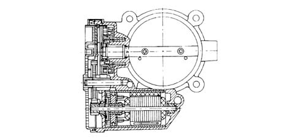
Air flow meter
The flow meter is built into the air filter case and is hot film type.
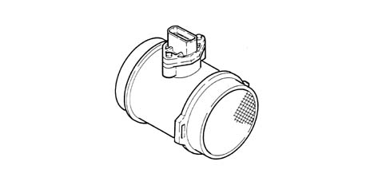
The intake air temperature sensor is built into the flow meter.
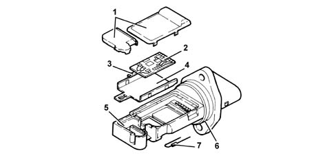
1 - Covers 2 - Electronic card 3 - Sensor 4 - Support plate 5 - Support 6 - O-ring 7 - Temperature sensor
Operation
The operating principle is based on a heated diaphragm located in a measuring duct through which the intake air entering the engine flows.
The hot film diaphragm is kept at a constant temperature (about 120°C above the incoming air temperature) by the heating resistor.
The air mass passing through the measuring duct tends to draw heat from the diaphragm, so to keep the latter at a constant temperature, some current must flow through the resistor.
This current is measured by a suitable Wheatstone bridge.
The current is therefore proportional to the mass of flowing air.
The flow meter directly measures the air mass (not volume), thus eliminating problems of temperature, altitude, pressure, etc.